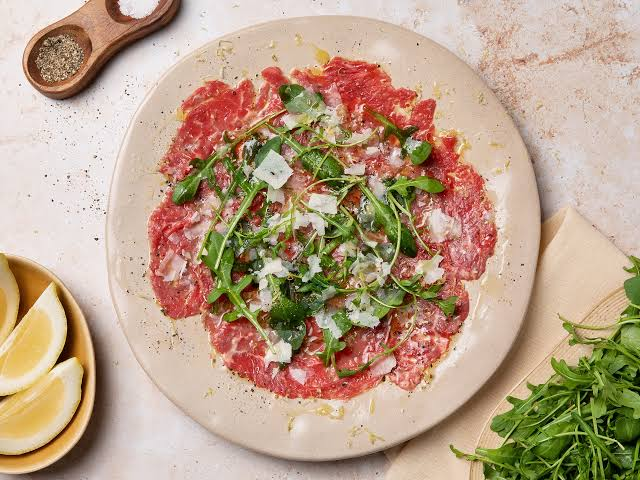
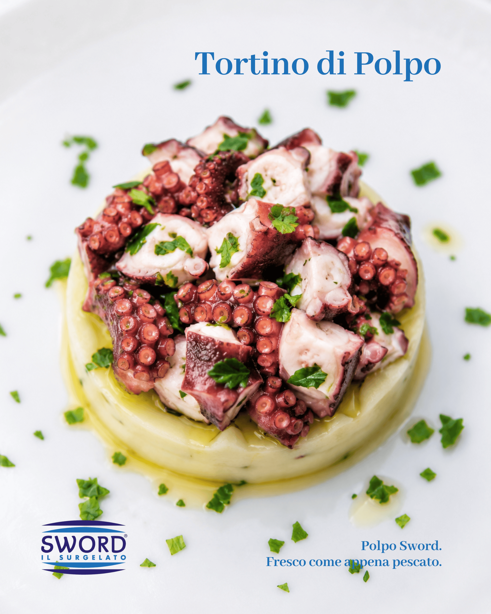

Başlamak İçin
Başlangıçlar
Carpaccio di Manzo
Umbria siyah trüf yağı, rendelenmiş Parmigiano Reggiano ve yaban rokası ile ince dilimlenmiş olgunlaştırılmış dana eti
₺485

Burrata con Pomodorini
Heirloom kiraz domates, soğuk sıkım fesleğen yağı ve Çamaltı deniz tuzu ile taze ithal burrata
vejeteryan
₺425

Insalata di Polpo
Amalfi turunçgil sosu, tuzlanmış kapari ve Taggiasca zeytini ile mangalda pişirilmiş Akdeniz ahtapotu
şef imzası
₺520

Tartare di Tonno
Avokado kreması, yuzu ponzu, susam ve kristalize limon kabuğu rendesi ile elle doğranmış sarı yüzgeçli ton balığı
₺580